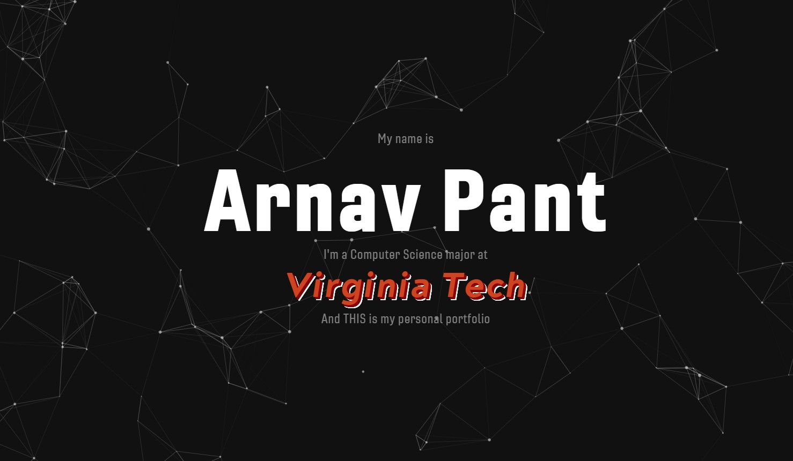

Personal Portfolio Website
This portfolio is a dynamic, self-reflective showcase of my journey as a developer and designer. It not only highlights a curated collection of projects but also stands as a testament to the modern web development skills I've honed over time. The site features a clean, responsive design that adapts seamlessly across devices, demonstrating my proficiency in HTML5, CSS3, and JavaScript. Interactive elements, smooth animations, and thoughtful UI/UX design reveal my attention to detail and commitment to creating intuitive user experiences.
Beyond serving as an archive of my work, the portfolio itself is a live demonstration of best practices in web performance, accessibility, and maintainable code architecture. From responsive layouts and cross-browser compatibility to efficient asset management and version control, every aspect of the site underscores my ability to build scalable, high-quality web applications.